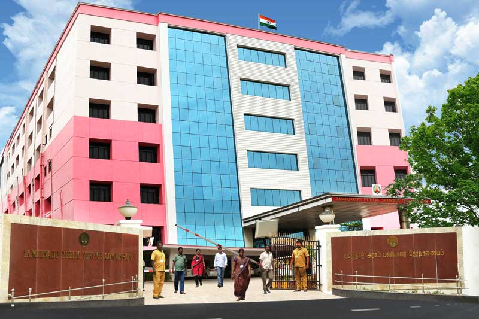

அரசுத் தேர்வுகள் இயக்ககம்
Directorate of Government Examinations
Thiru.S.K.PRABAKAR
CHAIRMAN
Thiru.S.GOPALA SUNDARA RAJ I.A.S.,
SECRETARY
Thiru.AJAY YADEV I.A.S.,
CONTROLLER OF EXAMINATIONS
Thiru.Dr.PREAMKUMAR MFC.,MBA.,PGDIB.,PTM,Ph.D.,
Thirumathi.Dr.K.ARULMATHI M.Sc.,Ph.D.,
Thiru.Fr.A.RAJ MARIAUSAI B.A.,B.PH.,M.A